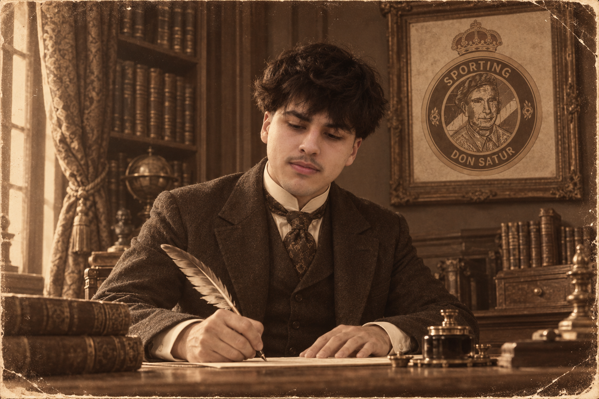
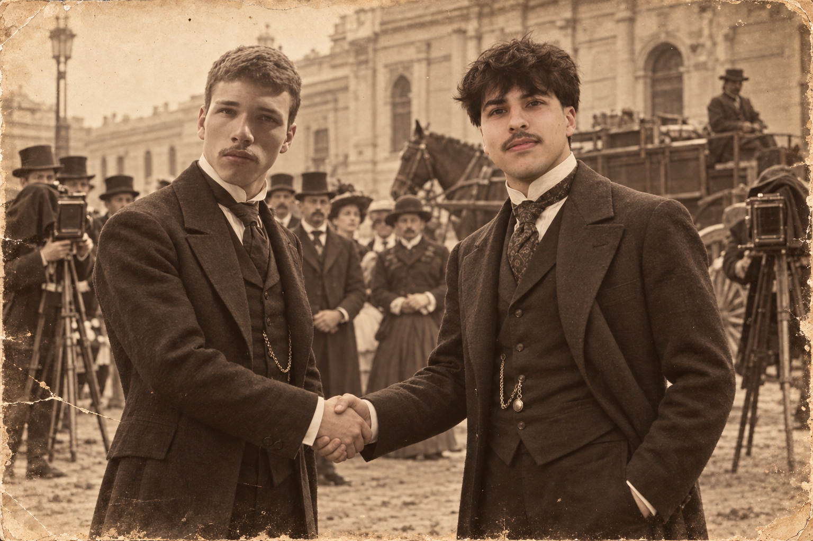
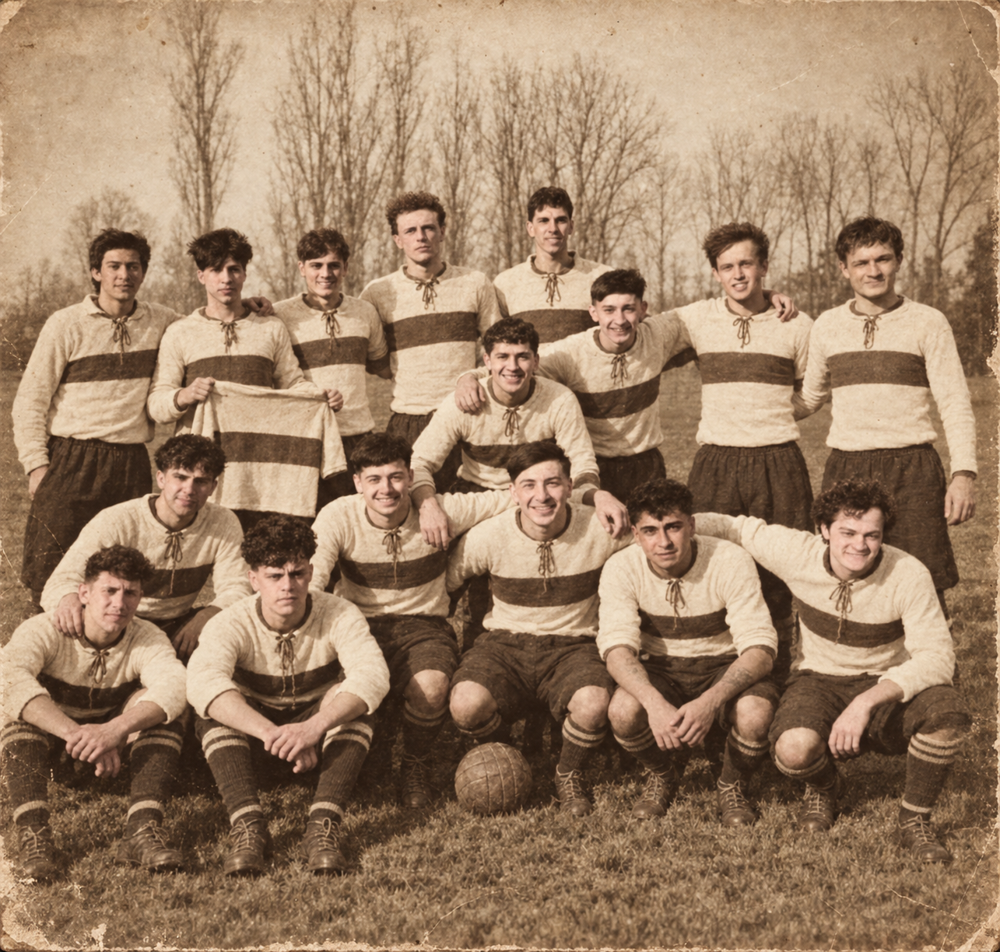

Historia
El inicio de una rivalidad
Corrían los últimos años del siglo XIX y el fútbol comenzaba a hacerse un lugar en los baldíos de la ciudad. Entre calles de tierra, carruajes y edificios a medio levantar, un grupo de estudiantes de arquitectura cambiaba, cada domingo, las reglas y los compases por una pelota de cuero.
Al frente de aquellos jóvenes estaba Carri, fundador del SP Don Satur, una institución que competía en la Primera Categoría de la liga local. Sus jugadores podían discutir durante horas la proporción de una fachada, aunque dentro del campo no siempre mostraban semejante acuerdo.
Una tarde, mientras el conjunto practicaba en un terreno señalado con postes de madera, pasó por allí Lautaro Cisint. Había defendido los colores de otro club, pero por entonces se encontraba sin equipo. Se detuvo junto al campo, observó algunas jugadas y, al faltar un hombre para completar el partido, dejó el saco a un costado y se sumó.
Carri reparó en aquel recién llegado. Al terminar la práctica, antes de que Lautaro recogiera sus pertenencias, se acercó con una propuesta.
—Tenemos un segundo cuadro que necesita hombres. Véngase a jugar con nosotros. Y si conoce algunos buenos jugadores, tráigalos también. Nos vendrían bien.
Lautaro aceptó.

Los primeros encuentros de la reserva estuvieron lejos de despertar entusiasmo. Se jugaba con voluntad, pero abundaban los errores y las derrotas se sucedían. Más de una tarde, los muchachos abandonaron el campo en silencio, con barro en las medias y varios goles en contra.
Sin embargo, Cisint regresaba a la práctica siguiente. Y, de tanto en tanto, lo hacía acompañado.
Un antiguo compañero, un conocido de los partidos del barrio, algún jugador al que había convencido después de una larga conversación de café. Así, hombre por hombre, la reserva empezó a cambiar. Los recién llegados se mezclaron con quienes habían resistido los malos resultados y fueron encontrando su lugar.
Comenzaron a reconocerse por la voz, a entender cuándo uno iba a adelantarse y cuándo otro necesitaba ayuda. Las derrotas dejaron de ser inevitables. Llegaron los primeros triunfos y, con ellos, una confianza que aquel segundo cuadro nunca había tenido.
Una noche, Carri citó a Lautaro en la pequeña oficina donde se guardaban las actas del club. Sobre el escritorio había una lámpara de aceite, varias hojas y el registro de los jugadores de la reserva.
—Estos hombres los ha reunido usted —le dijo—. Y ya han demostrado que pueden sostener un equipo. Quiero que se haga cargo del segundo cuadro y forme un club propio. Preséntenlo en la Tercera Categoría.
"Los colores nos unen. La amistad nos define."
Lautaro miró la nómina. Allí figuraban los nombres de quienes habían compartido las peores tardes y habían vuelto, una y otra vez, a ponerse los botines.
Aceptó el ofrecimiento.

Poco después, con tinta y pluma, quedó asentada la fundación del Sporting DS. El nombre conservaba una huella de su origen, pero desde aquel momento el equipo tendría autoridades, colores y destino propios. Quienes hasta entonces habían sido los hombres de la reserva pasaron a defender una nueva institución.
Mientras el SP Don Satur continuaba su campaña en Primera, Sporting DS comenzó a disputar los encuentros de Tercera. Sus primeros recursos fueron modestos: una pelota remendada, camisetas reunidas con esfuerzo y el compromiso de presentarse cada domingo. Alcanzaba para empezar.
El tiempo, sin embargo, alteró el orden que había separado a ambos clubes.
Tras una campaña adversa, el equipo de Carri perdió su lugar en Primera. Consumado el descenso, sus dirigentes solicitaron a la liga ser incorporados a la Tercera Categoría. Cuando se aceptó la petición, los dos nombres aparecieron, por primera vez, en la misma lista de competidores.
El encuentro entre ellos pronto ocupó las conversaciones de cafés y veredas. Algunos conocían a Carri; otros habían visto jugar a Lautaro desde sus primeras tardes en la reserva. Había amistades repartidas entre los dos bandos y demasiados recuerdos compartidos como para considerar aquel partido uno más.
El primer enfrentamiento quedó fijado para el 26 de septiembre.
Aquella tarde, los espectadores se acomodaron junto a las líneas del campo. Algunos llegaron a pie; otros dejaron sus carruajes en las inmediaciones. Los jugadores se saludaron con la familiaridad de quienes habían vestido la misma camiseta, aunque al sonar el silbato cada uno supo bien qué colores defendía.
El partido se disputó con firmeza. Se discutió cada falta, se corrió cada pelota y desde los costados llegaron indicaciones que nadie había pedido.
Al terminar, la victoria fue para Sporting DS.
Los hombres que alguna vez habían integrado la reserva vencían al primer equipo del que habían nacido. Lautaro recibió los abrazos de sus compañeros; Carri reunió a los suyos y se retiró con una revancha pendiente.
Al día siguiente, una breve crónica del periódico local dejó constancia del resultado:
«Sporting DS se impuso en el primer desafío entre ambas instituciones. Por el empeño de los jugadores y el interés del público, cabe esperar que sus próximos encuentros sean aguardados con particular entusiasmo».
Todavía no lo llamaban clásico.
Pero desde aquel 26 de septiembre, cada club comenzó a mirar el calendario para saber cuándo volvería a encontrarse con el otro.
